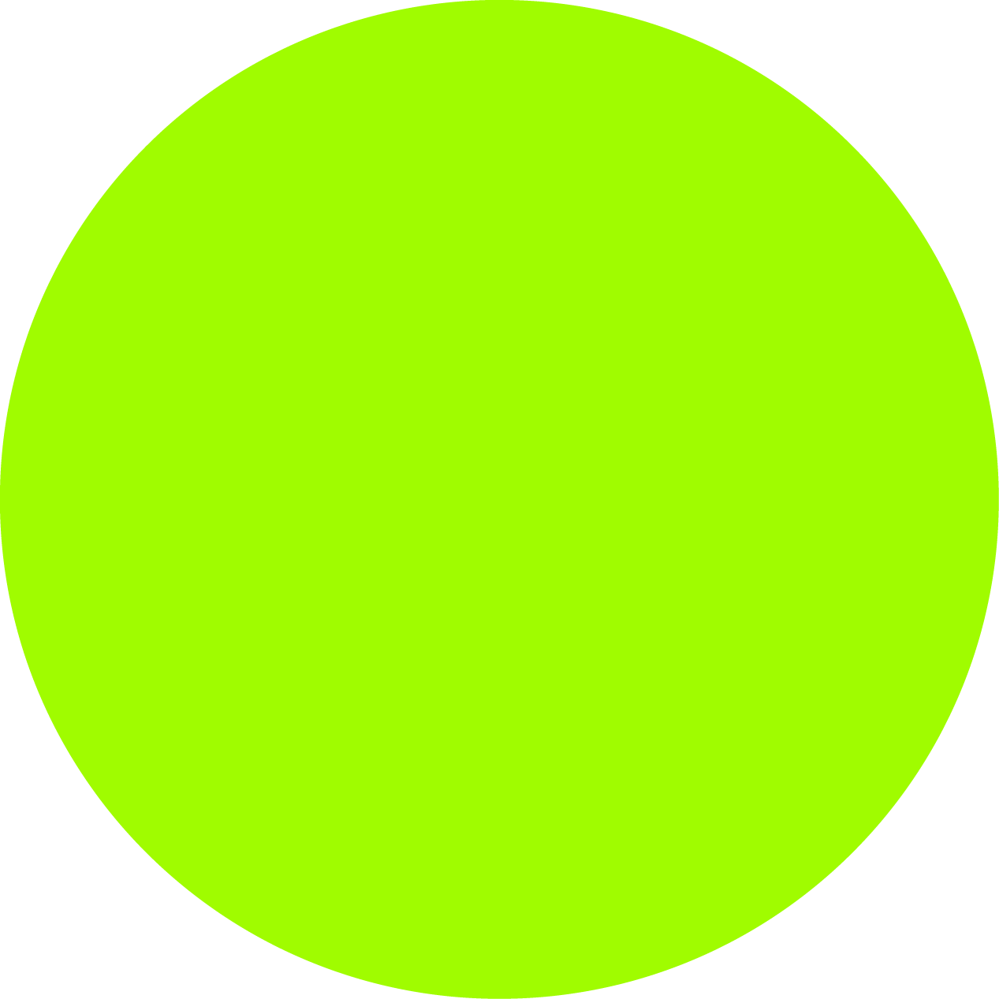
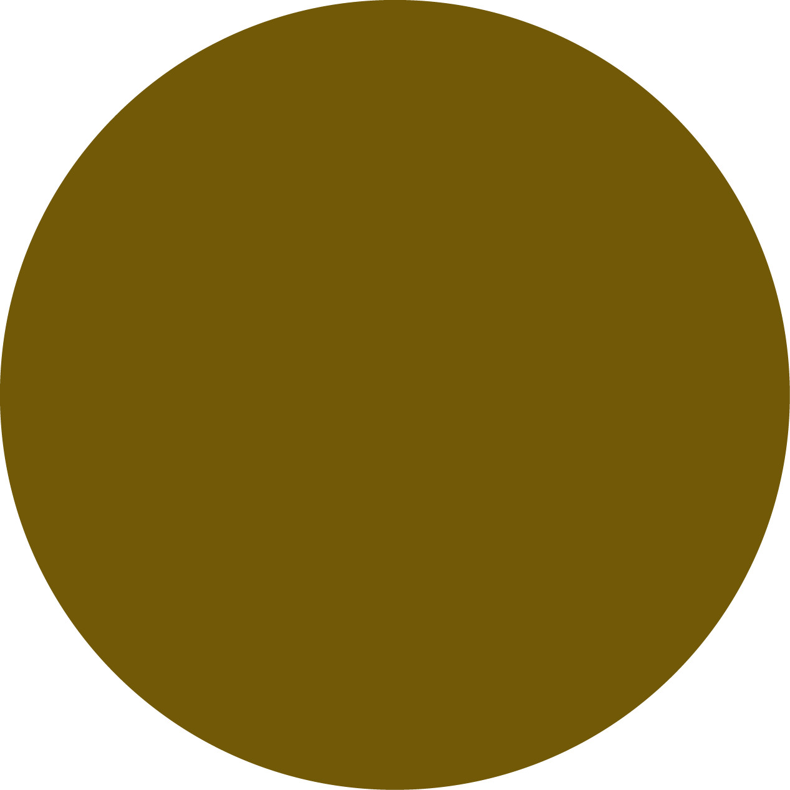
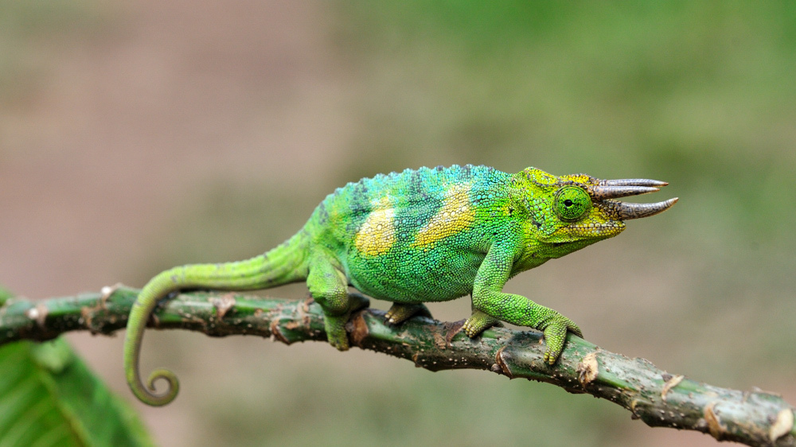
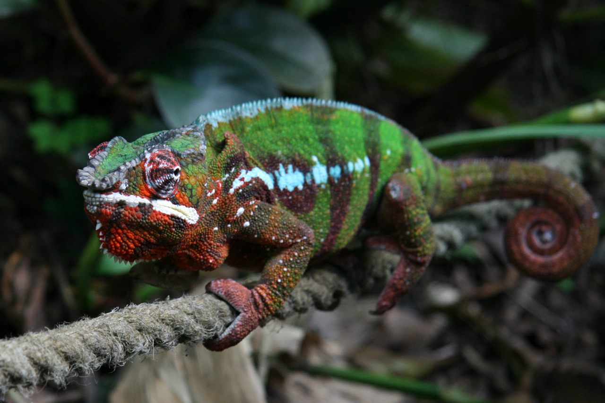
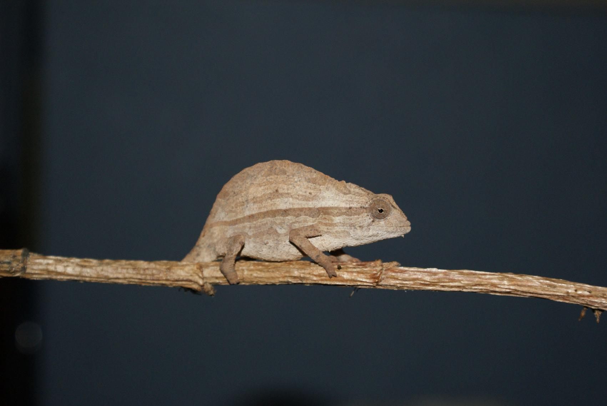
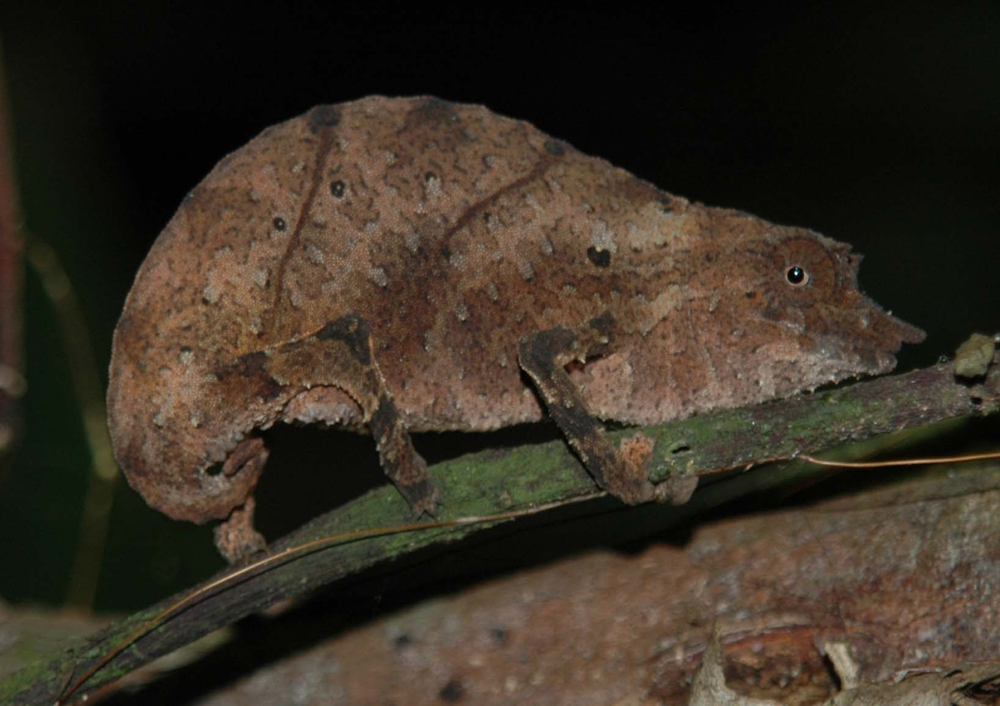
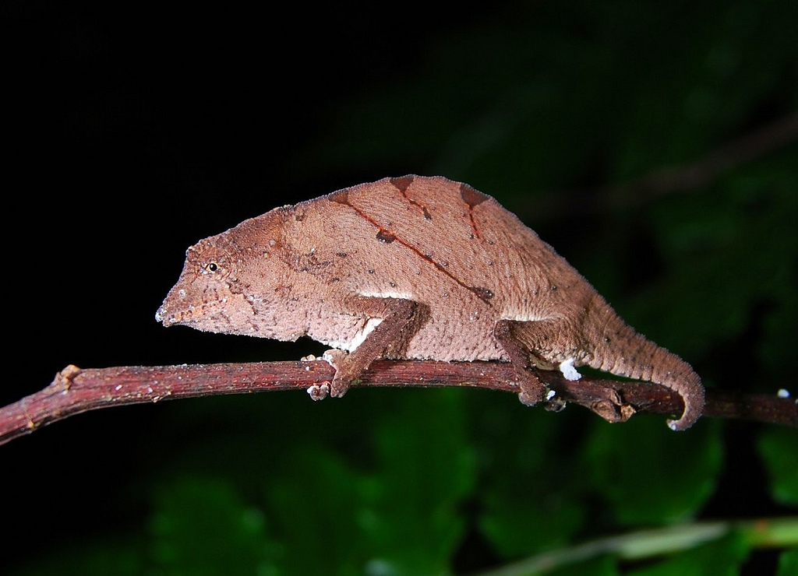

Chameleons are a distinctive and highly specialized clade of old world lizards
Color ChangeThese species come in a range of colors, and many species have the ability to change colors
vCHANGE OF COLOR
Some chameleon species are able to change their skin coloration
Different chameleon species are able to vary their coloration and pattern through combinations of pink, blue, red, orange, green, black, brown, light blue, yellow, turquoise, and purple. Color change in chameleons has functions in social signaling and in reactions to temperature and other conditions, as well as in camouflage.
Chameleons tend to show brighter colors when displaying aggressively to other chameleons
Chameleons tend to show darker colors when they submit or "give up".
EVOLUTION
The oldest known chameleon is Anqingosaurus brevicephalus from the Middle Palecene near China. Although nearly half of all chameleon species today live in Madagascar, this offers no basis for speculation that chameleons might originate from there.
In fact, it has recently been shown that chameleons most likely originated in Africa
More...DESCRIPTION
Chameleons vary greatly in size and body structure, with maximum total lengths varying from 15 mm in male to 68.5 cm. Many have head or facial ornamentation, such as nasal protrusions, horn,or large crests on top of their heads. Many species are sexually dimorphic, and males are typically much more ornamented than the female chameleons
VELIEDChamaeleo calyptratusmale: 35–60 cm female: 25–33 cm lifespan: about 5 years colors: Green and light colors |

|
JACKSON’STrioceros jacksoniimale: 23–33 cm female: 25–33 cm lifespan: 5 - 10 colors: Green and light colors |
 |
PANTHERFurcifer pardalismale: 38–53 cm female: 23–33 cm lifespan: about 5 (2–3 for birthing females) colors: Darker colors |
 |
BEARDED PYGMYRieppeleon brevicaudatusmale: 5–8 cm female: 5–8 cm lifespan: about 3–5 colors: Brown, beige, green |
 |
SPECTRAL PYGMYRhampholeon spectrummale: 8–10 cm female: 5–10 cm lifespan: 3–5 colors: Tan and gray |
 |
USAMBRA PITTED PYGMYRhampholeon temporalismale: 6–10 cm female: 5–9 cm lifespan: 5–11 colors: Gray and brown |
 |
SENSES
Chameleons have the most distinctive eyes of any reptile. The upper and lower eyelids are joined, with only a pinhole large enough for the pupil to see through. Each eye can pivot and focus independently, allowing the chameleon to observe two different objects simultaneously. This gives them a full 360-degree arc of vision around their bodies. Prey is located using monocular depth perception, not stereopsis. Chameleons have very good eyesight for reptiles, letting them see small insects from a 5–10 meter distance
- Like snakes, chameleons do not have an outer or a middle ear, so there is neither an ear opening nor an eardrum. However, chameleons are not deaf: they can detect sound frequencies in the range of 200–600 Hz
More...FEEDING
All chameleons are primarily insectivores that feed by ballistically projecting their long tongues from their mouths to capture prey located some distance away. While the chameleons' tongues are typically thought to be one and a half to two times the length of their bodies (their length excluding the tail), smaller chameleons (both smaller species and smaller individuals of the same species) have recently been found to have proportionately larger tongue apparatuses than their larger counterparts.
Thus, smaller chameleons are able to project their tongues greater distances than the larger chameleons that are the subject of most studies and tongue length estimates, and can project their tongues more than twice their body length
© 2016 Exotic Planet. All rights reserved Designed by Vladimir Greksa